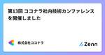
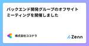

株式会社ココナラさんのフィード
https://zenn.dev/coconala
株式会社ココナラのテックブログ用アカウントです。 ココナラに所属するエンジニアが多様な記事を執筆して公開していきます。 採用情報はこちら → https://coconala.co.jp/recruit/engineer ココナラWebサイト→ https://coconala
フィード

バージョンアップ対応に苦労した過去の自分に送りたい7つの心得 25
25
株式会社ココナラさんのフィード
こんにちは。株式会社ココナラでバックエンド開発に従事するRKと申します。みなさまはシステムのバージョンアップ対応をした経験はありますでしょうか？システムの安定稼働に配慮して一定期間で実施している場合もあれば、利用しているライブラリや開発言語そのものの End Of Life（以降、EOL） によってバージョンアップを余儀なくされて実施した場合もあるでしょう。どちらにせよ、ユーザーの皆様に安心してシステムをご利用いただくためにも、バージョンアップ対応はとても大事な作業の1つとなります。弊社ココナラでも、もう少しでEOLを迎える／迎えた開発言語や環境を持つシステムは存在します。本...
2日前

第13回 ココナラ社内技術カンファレンス を開催しました 1
株式会社ココナラさんのフィード
はじめにココナラのインフラ・SRE チームのクララです今回は社内技術カンファレンス運営として、2024-07-29 に開催された「第 13 回 ココナラ社内技術カンファレンス」の様子をレポートします！ 社内技術カンファレンスとは 目的ココナラでは半年に 1 度、すべてのエンジニアが集まって技術カンファレンスを開催しています会の初めには、弊社 VPoE の村上から技術カンファレンスの目的が伝えられます 構成技術カンファレンスは以下の2部構成で実施しています1 部テックブログの View 数表彰社員によるライトニングトーク2 部懇親会...
4日前

バックエンド開発グループのオフサイトミーティングを開催しました
株式会社ココナラさんのフィード
こんにちは！株式会社ココナラプロダクト開発部バックエンド開発グループでエンジニアをしておりますぴろと申します。休日は猫🐈お寿司🍣ギター🎸を生きがいにしています。今回は7月に実施したオフサイトミーティングについてお伝えしようと思います。 オフサイトミーティングとは？普段働いている場所から離れて開催される会議で、通常業務から離れることで新たな視点で議論したり、リラックスした雰囲気でチームビルディングのための交流を行ったりします。 実施内容チームビルディング企画:カタカナーシ課題改善企画チームビルディング企画:チーム対抗 コードネーム 1.チームビルディング企画:...
10日前

表示中の画面をワンクリックでPDFダウンロードする
株式会社ココナラさんのフィード
こんにちは！株式会社ココナラのプロダクト開発部フロントエンド開発グループ所属の飯塚です。ココナラでは、一定の条件を満たすと「納品書」等の帳票がダウンロードできます。各帳票は、Webサイト上で確認したうえでワンクリックでPDFダウンロードできるようになっています。以下は実際の納品書画面になります。今回は、その ワンクリックでPDFダウンロード の実装方法についてご紹介します！ 要件実装にあたり、要件は以下の通りでした。ブラウザの「印刷」からPDFダウンロードすることは可能だが、手間なのでワンクリックでPDFダウンロードしたいヘッダーやフッターなど、帳票に関係ない要素は...
17日前
社内でRuby on Railsリリースノート勉強会を開催しました
株式会社ココナラさんのフィード
こんにちは！株式会社ココナラのプロダクト開発部バックエンド開発グループでエンジニアをしておりますもっちーです。今回は先日バックエンド開発グループで開催した「Ruby on Railsリリースノート勉強会」について紹介したいと思います！ はじめにそもそもリリースノートとは、「ソフトウェア製品のリリースの際に、機能強化や不具合修正の内容などをユーザーに示す資料またはウェブサイト」を指します。2024年5月30日にRuby on Railsのバージョン7.2 Beta 1がリリースされました。ココナラではバックエンドの開発でRuby on Railsを利用しており、そのバージョン...
24日前
【App Router】Next.jsのRoute HandlersとServer Actions、どう使い分ける？
株式会社ココナラさんのフィード
はじめにこんにちは。ココナラテックの開発をしているエンジニアのもちさんです。ココナラではエージェント事業部で使っているフロントエンドのフレームワークとして Next.js を採用しており、2023 年の 9 月から App Router への移行を始めています。実際に App Router で Cookie を設定しなければいけない時があったのですが、Next.js の公式ドキュメントにあるように Cookie を設定するにはServer ActionかRoute Handlerを使う必要がありました。Good to know: HTTP does not allow se...
1ヶ月前
不確実性を減らすコミュニケーションのコツ
株式会社ココナラさんのフィード
はじめにこんにちは！株式会社ココナラの募集部のマーシャです。７年くらい前に日本に来て、６年間日本で働いています。私はコミュニケーションの専門家ではありませんが、西洋文化圏から来ており、内向的で、見た目も異なるため、コミュニケーションの違いに気付きやすく、それがなぜそうなるのか、どうすればより効率的にできるのかを考える傾向があります。今までの経験を通じて、以下で具体的にお話ししますが、いくつかの一般的なコミュニケーションパターンに気づきました。これらの一部は文化に起因し、効果を発揮しています。しかし、それらを認識し、少し努力することでさらに職場でのメリットを得ることができると思いま...
1ヶ月前
Kotlin Fest 2024の参加レポート
株式会社ココナラさんのフィード
こんにちは。株式会社ココナラのアプリ開発グループ、Androidチームのジェレミです。今回は6月22日(土)に開催されていたKotlin Fest 2024に参加してきましたのでレポートします。 Kotlin FestとはKotlin Festは「Kotlinを愛でる」をビジョンに、Kotlin™に関する知見の共有と、Kotlinファンの交流の場を提供する技術カンファレンスです。5年ぶりにオフライン形式で開催されました。ココナラではAndroid開発にKotlinを採用しています。 参加したきっかけオンラインのカンファレンスには参加したことがありましたが、オフラインで...
1ヶ月前
「AWS Summit Japan 2024」で事例展示＋ミニステージ登壇しました！
株式会社ココナラさんのフィード
こんにちは！株式会社ココナラでHead of Informationをしている ゆーた（@yuta_k0911）です。今回は6/20（木）〜21（金）に開催された AWS Summit Japan 2024 で事例展示＋ミニステージ登壇をしました！今回はブース出展やミニステージについて、様子をお伝えします！https://aws.amazon.com/jp/summits/japan/繰り返しですが、なんとココナラがAWS Summit Japanにデビューしました！🎉今年はオフラインで3万人以上、オンラインで2万人以上の方が参加したとのことです！例年以上の参加人数で規模が...
1ヶ月前
ココナラ会計システムの話
株式会社ココナラさんのフィード
株式会社ココナラ DevOps開発グループ/業務システム開発チーム所属のもりしたです。今回はわたしのチームが主に担当している会計システムについてご紹介したいと思います。 会計システムって？ココナラにおける会計システムは大きく３つの役割を持っています。お金の動きを記録する集計情報を提供する正確性を担保するココナラスキルマーケットでの取引ごとに発生するお金の動きを会計観点で記録し、さらに取引単位（※）で記録したお金の動きを月単位で集計します。記録および集計された会計情報は経理担当が行う月次決算の業務にて正しいことを検証します。前者の２つはシステムが自動的に行いますが、...
1ヶ月前
Sentry APIを試しに触ってみた
株式会社ココナラさんのフィード
こんにちは！株式会社ココナラプロダクト開発部フロントエンドグループでエンジニアをしている maitoです。coconalaでは、フロントエンドにSentryを導入しており、日々発生するエラーについてモニタリングをしているのですが、業務の生産性を向上させるために、Sentryをもっと活用できないかと調べていたところ、APIがあることを発見し、今回試しに触ってみました。 そもそもSentryとはSentryとは、400万人以上の開発者によって利用されているアプリケーションから発生するエラーをモニタリングするツールです。 Sentry APIを実行する前の準備Sentry AP...
2ヶ月前
RubyKaigi 2024の参加レポート
株式会社ココナラさんのフィード
こんにちは！株式会社ココナラプロダクト開発部DevOps開発グループでエンジニアをしている ぽったー です。最近太ってきたので、ジムを始めようかと迷っています。今回は2024/5/15 ~ 2024/5/17に沖縄で開催されたRubyKaigi 2024に参加してきたので、その様子をレポートしたいと思います！ RubyKaigi とはRubyKaigiとは、プログラミング言語のRubyに関する世界最大規模の国際カンファレンスです。Rubyの開発者まつもとゆきひろさんをはじめ、Ruby界隈で著名な方々が多く参加されます。参加することで、Rubyの最新動向を知ることができたり...
2ヶ月前
バックエンドモニタリング改善の取り組み
株式会社ココナラさんのフィード
こんにちは。プロダクト開発部のバックエンド開発グループでエンジニアをしているゆうまです。今回はバックエンド開発グループ内のモニタリングの改善事例についてご紹介します。 いままでのモニタリング今までバックエンド開発グループでは、日別の担当者がGrafanaで作成したドメイン別のエラー率、URL別エラー発生状況、スロークエリを監視していました。しかし、定常的なモニタリングがこれのみでは、新規発生エラーやDB周り以外のパフォーマンス劣化を検知できず、対応が遅れるという課題がありました。url別エラー発生状況ドメイン別のエラー率 モニタリングの重要性の周知自分たちで開発し...
2ヶ月前
最低限のTerraformコード規約を定義した
株式会社ココナラさんのフィード
はじめにインフラ・SREチームのよしたくです。2ヶ月ほど前にTerraformの公式スタイルガイドが発表されましたね。実は同じ時期にココナラ用のTerraformコード規約を作成していたので、今回はその紹介をしようと思います。 なぜ作成したのかコード品質をあげることが目的です。実のところ、チーム内でTerraform記述の経験値はかなりバラバラであり、またもともと記載されているものもキレイな状態とは言えませんでした。そこで、最もTerraform経験のある自分が最低限の規約を整え、メンバーの実装やレビュー時に活用してもらうことで、一定のコード品質を担保できないかと考え...
2ヶ月前
24卒入社 内定者インターン バックエンド編
株式会社ココナラさんのフィード
はじめにこんにちは！プロダクト開発部バックエンド開発グループ配属になりました唐揚げ君です（このあだ名ではほとんど呼ばれていない、、）。4 月に入社してからは早いもので、もう今年の GW も終わってしまいました 🥹。実はココナラでは、1 月から 3 月までの期間で内定者に対してインターンを実施していました！今回は私がインターンを通じて得た学びや、バックエンド開発グループのインターンではどのようなことをするのかを紹介していきます！ココナラの選考を受けるか検討している人や私と同じような実務未経験でエンジニアになろうとしている人に少しでも役に立てれば幸いです！ 簡単な経歴と自己...
3ヶ月前
社内Jetpack Compose勉強会について
株式会社ココナラさんのフィード
こんにちは。株式会社ココナラアプリ開発グループ、Androidチームの藤永です。今回は、ココナラのAndroidアプリチームで取り組んでいるJetpack Compose勉強会について紹介します。 背景ココナラのAndroidアプリのUIはまだ大部分がAndroid Viewで実装されていますが、新規のUIについてはJetpack Composeで実装する方針をとっています。参考: Jetpack Compose導入時の記事https://zenn.dev/coconala/articles/0dd6b520582646その一方で、小さい開発タスクでは既存のAndroid ...
3ヶ月前
Android / iOSアプリのE2Eテスト自動化の運用保守で日々格闘しているお話
株式会社ココナラさんのフィード
こんにちは！株式会社ココナラのプロダクト開発部QA開発チーム所属のほそいです。ココナラではAppiumを使用したAndroid / iOSアプリのE2Eテスト自動化を行っております。詳しい内容は以下の記事をご覧いただければと思います。https://zenn.dev/coconala/articles/a3a5e33cd1d981https://zenn.dev/coconala/articles/a3a5e33cd1d982https://zenn.dev/coconala/articles/a3a5e33cd1d983今回は実際にE2Eテストの運用を行う上で、日々格闘して...
3ヶ月前
技術者の異常な愛情 または私は如何にして心配するのを止めてネットワーク機器を愛するようになったか
株式会社ココナラさんのフィード
ご挨拶というか、枕桜の花も散り葉桜が目につく季節となりました、いつもお世話になっております。ココナラ情報システムグループの山田志門（RTV710）です。イベントなどでは様々な方々に大変お世話になっております。さて今回の記事はどんな内容にしようかと考えたのですが、SASEの続報も、Jamf Proの話もうちのグループのメンバーが既に語ってしまっていることを考えると、ちょっと他のメンバーではあまり書かない内容がよいのではないかと思うようになりました。私が書く、書ける内容。それもうちの会社のテックブログで書ける範囲であれば、一体なんだろう？窓から見える、ライトアップされたスカイツリー...
3ヶ月前
「DevOpsDays Tokyo 2024」へ登壇しました！
株式会社ココナラさんのフィード
こんにちは！株式会社ココナラでHead of Informationをしている ゆーた（@yuta_k0911）です。今回は4/16（火）〜17（水）にオフライン・オンラインのハイブリッドで開催された DevOpsDays Tokyo 2024 へ登壇しましたので、そのレポートです！オフライン・オンライン合わせて、350名以上が参加するイベントです。https://www.devopsdaystokyo.org/スピーカーたちのページが良い感じにまとまってます！普段はDevOpsエンジニアを名乗っているわけではない私が「このイベントになぜ登壇したのか？」「どういうイベント...
3ヶ月前
内定者インターン体験記
株式会社ココナラさんのフィード
はじめにおはこんばんにちは！株式会社ココナラ新卒二期生のじんじんです！本記事では、2024年1月から入社まで参加していた内定者インターンについて、まるっともりもりお話します！！「未経験だけどエンジニアになりたい」「今度自分の会社でエンジニアを採用するけど、インターンをやる必要あるのか知りたい」といった方々に向けて、僕なりの苦労や感じたことをお伝えできればと思います。 目次自己紹介取り組むことインターン中に苦戦したこと参加してよかったことエンジニアの1日の流れに慣れることができたメンバーの雰囲気に馴染むことができた今後の意気込み終わりに 自己紹介...
3ヶ月前